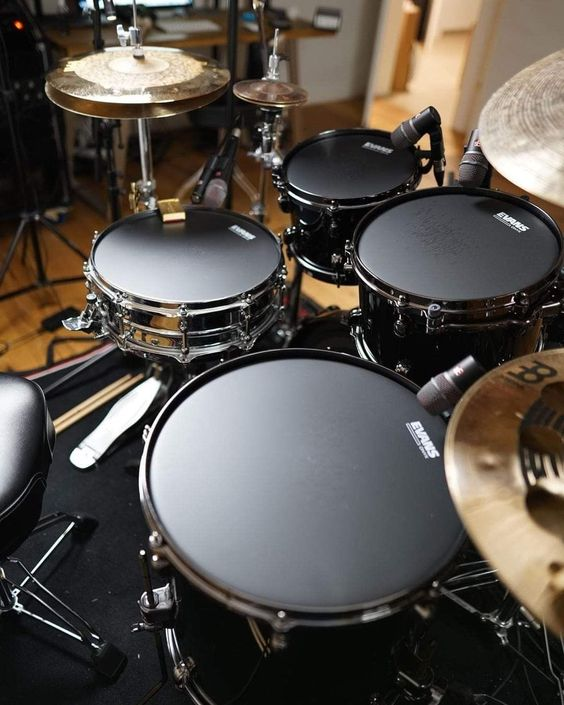

Guitar
Gitar adalah sebuah alat musik berdawai yang dimainkan dengan cara dipetik, umumnya menggunakan jari maupun plektrum. Gitar terbentuk atas sebuah bagian tubuh pokok dengan bagian leher yang padat sebagai tempat senar yang umumnya berjumlah enam didempetkan. Gitar secara tradisional dibentuk dari berbagai jenis kayu dengan senar yang terbuat dari nilon maupun baja. Beberapa gitar modern dibuat dari material polikarbonat. Secara umum, gitar terbagi atas 2 jenis: Akustik dan Elektrik.
Gitar Akustik, dengan bagian badannya yang berlubang (hollow body), telah digunakan selama ribuan tahun. Terdapat tiga jenis utama gitar akustik modern: gitar akustik senar-nilon, gitar akustik senar-baja, dan gitar archtop. Gitar klasik umumnya dimainkan sebagai instrumen solo menggunakan teknik fingerpicking komprehensif.
Gitar Elektrik, diperkenalkan pada tahun 1930-an, bergantung pada penguat yang secara elektronik mampu memanipulasi bunyi gitar. Pada permulaan penggunaannya, gitar elektrik menggunakan badan berlubang (hollow body), namun kemudian penggunaan badan padat (solid body) dirasa lebih sesuai. Gitar elektrik terkenal luas sebagai instrumen utama pada berbagai genre musik seperti blues, country, reggae, jazz, metal, rock, dan berbagai bentuk musik pop.
Piano
Piano (yang juga disebut pianoforte) adalah alat musik tuts yang diklasifikasikan sebagai instrumen dawai dan perkusi yang dimainkan dengan menekan tuts-tuts pada papan piano. Setiap tuts tersambung ke palu yang ada di dalam piano dan menekan senar di dalamnya, sehingga menghasilkan bunyi. Setiap senar memiliki panjang yang berbeda dan menghasilkan bunyi yang berbeda pula. Piano dimainkan dengan jari-jemari tangan. Pemain piano disebut pianis.
Drum

Drum adalah kelompok alat musik perkusi yang terdiri dari kulit yang direntangkan dan dipukul dengan tangan atau sebuah batang atau biasanya disebut Stick drum. Selain kulit, drum juga digunakan dari bahan lain, misalnya plastik. Drum terdapat di seluruh dunia dan memiliki banyak jenis, misalnya kendang, timpani, Bodhrán, Ashiko, snare drum, bass drum, tom-tom, beduk, dan lain-lain.
Dalam musik pop, rock, dan jazz, drums biasanya mengacu kepada drum kit atau drum set, yaitu sekelompok drum yang biasanya terdiri dari snare drum, tom-tom, bass drum, cymbal, hi-hat, dan kadang ditambah berbagai alat musik drum listrik. Orang yang memainkan drum set disebut "drummer".
Bass
Gitar Bass Elektrik (biasa disebut gitar bas, bas elektrik atau bas saja) adalah alat musik dawai yang menggunakan listrik untuk memperbesar suaranya. Penampilannya mirip dengan gitar elektrik, tetapi memiliki tubuh yang lebih besar, leher yang lebih panjang, dan umumnya memiliki empat senar (dibandingkan dengan gitar yang memiliki enam senar).